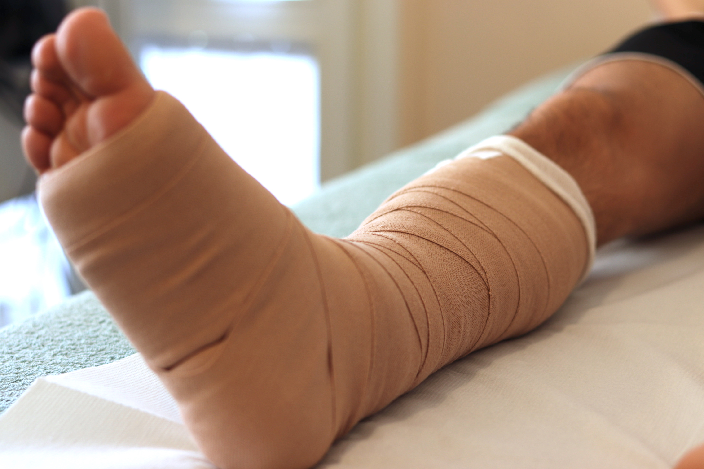

Bendaggio Multistrato
Effetti terapeutici
Il bendaggio elastocompressivo multistrato è una terapia fondamentale nel trattamento delle
patologie a
carico del
circolo venoso-linfatico e nelle cure dell'ulcera venosa.
Il principio alla base della terapia è quello di comprimere i tessuti e i muscoli aiutando la
loro
naturale capacità di
fare defluire i liquidi organici, riducendo e riassorbendo edemi cutanei. Gli effetti benefici sul
macro
e microcircolo
possono migliorare le condizioni degli arti specialmente in presenza di insufficienza venosa
cronica.
Patalogie trattate
Il bendaggio multistrato è ideale nella cura di ulcere venose e linfedemi primari e secondari.
Cos'è e come funziona
Il bendaggio multistrato, come indica il nome, è costituito dall'applicazione sovrapposta di vari tipi di bende elastiche a corta estensibilità. Esercitando una pressione costante su un'area limitata, provoca la riduzione del calibro venoso e dei reflussi anomali, aumentando la velocità del sangue refluo, migliorando il trasporto linfatico e riducendo così gli edemi.
Controindicazioni
Il bendaggio multistrato è da evitare per tutti quei pazienti che presentano infezioni
cutanee,
edemi di
natura non
vascolare, arteriopatia periferica, intolleranza al bendaggio, allergia ai materiali, arteriopatia
latente.
Controindicato anche nei casi di microangiopatia diabetica in stato avanzato o patologia arteriosa
con
indice ABI
inferiore a 0,8. Prima di effettuare qualsiasi applicazione il paziente è tenuto a presentare
tutta la
documentazione
medica relativa al problema da trattare.
Trattamento
Per garantire la sua efficacia, il bendaggio multistrato deve estendersi in modo uniforme, fornire
una
pressione
decrescente ma uniformemente distribuita e in grado di mantenersi costante fino alla successiva
applicazione.
La durata dell'applicazione è da stabilire a seconda della patologia da trattare. Dopo il
trattamento
nei casi più
gravi, è possibile mantenere i risultati ottenuti con l'uso di apposite calze contenitive.
Il bendaggio multistrato permette di agire con successo su pazienti cronicamente bisognosi, spesso
affetti da recidive o
peggioramenti della loro patologia.